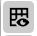

Prepare Document Template in Whiteboard¶
Preparing a document template allows template planners and designers to define how the document should look like before actually creating it.
| Purpose: |
|
| Target Audience: |
|
| Prerequisites: |
|
| Key Terms: |
|
Available Features in Whiteboard¶
| Sr. No. | Icon | Name | Details |
|---|---|---|---|

|
Zoom In | It is the Zoom in feature. It will make a screen appear much larger. | |
| Zoom Out | It is the Zoom out feature. It will make a screen appear much smaller. | ||
| Set Default Zoom Level | It will set the default zoom level. | ||
|  | Hide Grid | This feature is used to hide the grids from the document template in a page preview. | |
| Show Grid | This feature is used to show the grids in a document template in page preview. | ||
| Hide Background | This feature will hide everything from the background in page preview. | ||

|
Show Background | This feature will show everything in the background if anything is hidden. | |
| Hide Tags | This feature will hide the tags in a page preview. | ||
| Show Tags | This feature will show the tags in a page overview. | ||

|
Merge Slots | This feature is used to merge more than one Slot in a document template. You can select the Slots with the help of CTRL key and click on this icon to merge the selected Slots. | |

|
Split Slots | This feature is used to split the Workable Area into multiple Slots. So that products can be placed in a separate Slot. When you click on split Slot icon, a window will prompt where you need to enter the number of rows and columns in which you want to split the Workable Area. | |

|
Exchange Slots | This feature is used to exchange the Slots. You need to select any two Slots that you want to exchange and click on this icon. | |

|
Page Previews | This feature is used to display a document in a preview mode. You will be able to see a document in a preview mode before it gets ready for Adobe © InDesign ©. | |

|
Marketing Content | You need to first select any Slot where you want to place the article and then click on this icon. It will show the list of marketing articles that best fit in the selected Slot. You can drag any article from the list and place into the selected Slot. | |

|
Marketing Bundles | You need to first select any Slot where you want to place the marketing bundle and then click on this icon. It will show the list of marketing bundles that best fit in selected Slot. You can drag any bundle from the list and place into the selected Slot. | |

|
Product Templates | You need to first select any Slot. It will show you the list of product templates that best fit the selected Slot according to the Slot size. When you drag and drop any marketing article into a Slot, it will automatically fetch the product template as well based on the size of the selected Slot. | |

|
Tags | It will show you the list of tags. You can drag and drop any of the tags into a Slot. | |
| Sync Status | This feature lets you know whether the planned products in product templates are presentin a document or not. It shows whether the products are in the planning phase or it is ready for Adobe © InDesign © and print. | ||

|
Refresh | It is a refresh feature. A planner will plan and save the document template details in Whiteboard. A Designer will accept the changes in Adobe © InDesign © made by a planner. If a designer makes any changes in a document template in Adobe © InDesign © and uploads it after he accepts the changes from a planner, then this refresh icon will blink in Whiteboard. | |

|
Accept Changes | A planner will select the changes made by a designer and click on this icon to accept the changes. | |
| Delete | A planner will select the changes made by a designer and click on this icon to reject or delete the changes. | ||

|
Select All | A planner will select all the changes made by a designer by clicking on this icon. A planner can either accept or delete all the changes made by a designer in one go with the help of this feature. |
How-to: Plan a Document Template¶
Locate a Document Template¶
- Log in and select MxM from the drop-down list located in the header panel.

- Click on the Templates menu from the left pane.

- This screen shows all created templates including product templates, document templates, and publication templates.
- Locate the document template for planning.
- Alternatively, you can also use the filter option Document Template from Class Taxonomy to show only the document templates.

Open a Document Template in Content Open View¶
- Select and click on a document template to open it in content open view.
- Add the Classes and Taxonomies from the Overview tab in content open view.

- Add properties from the Properties tab in content open view.

- The Relationship tab of content open view lets you see Product Template, Images, Marketing Products, Publication Templates, and so on associated with a document template.
Open a Document Template in Whiteboard¶
- Click on the Open icon to open a document template in Whiteboard.

- The document template is shown in a preview mode.

Add Slots in the Document Template¶
- View and select the Workable Area in a document template.

- Click on the Split Slots icon to split the Workable Area into Slots.
- In the new prompt that appears, provide the Number of Rows and Number of Columns then click on the Split button.
- The Workable Area is now divided into Slots.

Add Tags in a Slots¶
- Select any Slot and assign tags to it. Click on the Tags icon found in the left vertical toolbar to view the list of tags.

- All tags that you select will be assigned to a Slot, and the selected tags are visible on the top of a Slot.

Add Products in a Slot¶
- Click on the Marketing Articles icon found in left vertical toolbar to view the list of marketing articles.
- From the list, drag and drop any article to the desired Slot. The product template is selected automatically based on the slot size.

- Drag and drop the marketing articles in each of the Slot based on how you want your document template to look like.

Refresh and Sync Changes¶
- Click on the Refresh icon to show the sync status of the products. It will let you know whether the planned products in a product template are present in a document template or they are in a planning phase. A red vertical line is shown beside each product that is not in sync.
- Hover on the Information icon beside each Slot to know more details regarding the Slot, assigned product, and product template.
- Click on the Save button to save the planning details from Whiteboard.

- You can sync these changes in DTP using Adobe © InDesign ©. When you accept the changes or planning from the Sync Status list in InDesign, the actual products will be placed in Adobe © InDesign © template. Planning and Placement become in sync this way.
- Planner and Designer can work in parallel in Whiteboard and Adobe © InDesign © respectively.
- When a document is open at both Whiteboard and Adobe © InDesign ©, and a designer modifies a document template after accepting the changes that the planner has made in a document template, then there will be a notification in the Whiteboard side. A planner will see a blinking Refresh icon in Whiteboard.
- A planner can accept all the changes made by a designer. In this case, a planner will select the changes and click on the Accept icon to accept the changes.
- As soon as the planner accepts the changes for a product, the red vertical line beside the product details turn into green, indicating that a product is in sync.
- A planner can also delete the changes made by a designer. In this case, a planner will select the changes and click on the Delete icon to delete the changes.
- Save the changes by clicking on the Save button.